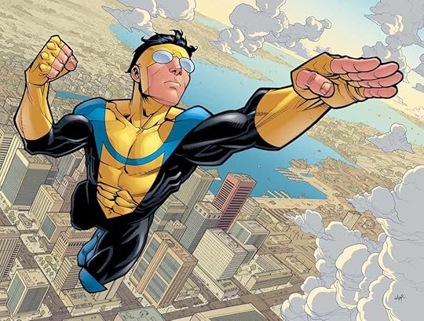
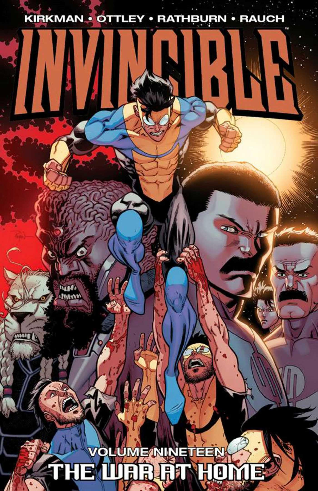
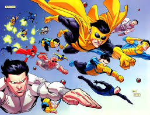
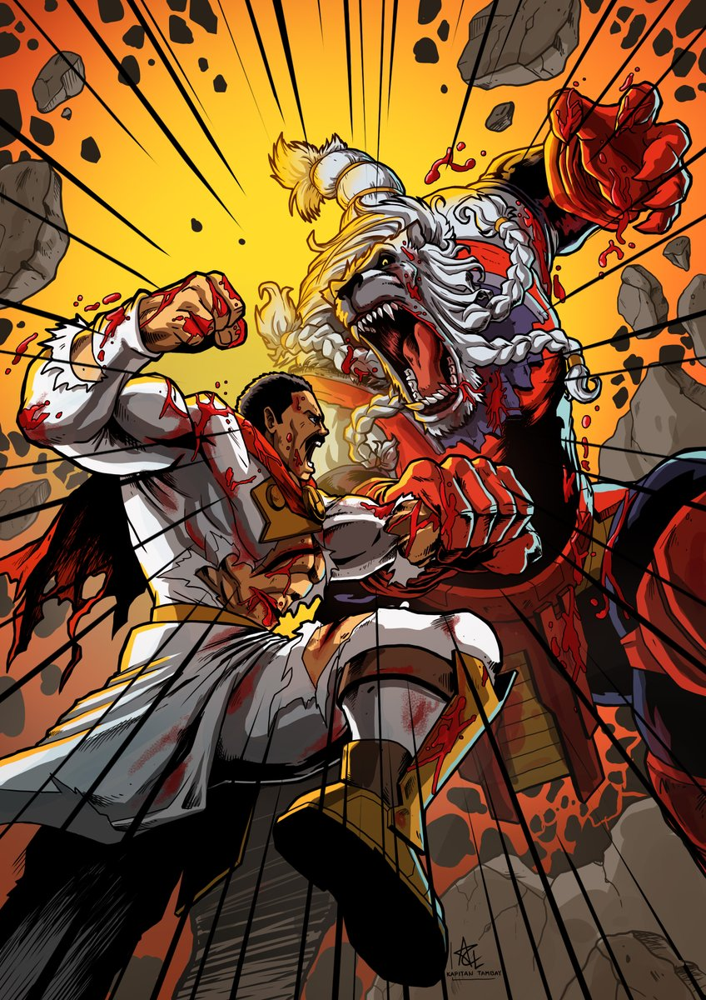
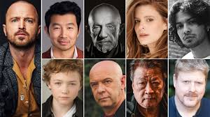
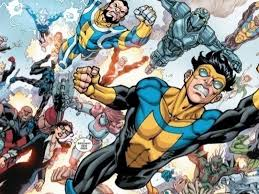

Invincible é o tipo de história que começa como mais um conto de super-heróis… e rapidamente mostra que está jogando um jogo muito mais profundo. A série acompanha Mark Grayson, um adolescente aparentemente comum, lidando com escola, amizades e aquela sensação constante de ainda não ter encontrado seu lugar no mundo. Mas há um detalhe que muda tudo: ele é filho do maior herói da Terra, Omni-Man. Quando seus próprios poderes começam a surgir, o que parecia ser o início de um sonho — voar, salvar pessoas, ser admirado — logo se transforma em algo muito mais complexo. O grande diferencial de Invincible está na forma como ela desmonta a fantasia tradicional dos super-heróis. Não é só sobre força ou salvar o dia — é sobre responsabilidade, identidade e, principalmente, consequências. Cada decisão pesa. Cada luta deixa marcas. E cada vitória vem acompanhada de dúvidas. Mark, agora como Invincible, precisa aprender rápido que ser herói não é tão simples quanto parece nos quadrinhos. Ele enfrenta não apenas vilões, mas também dilemas morais, relações familiares complicadas e a constante pressão de corresponder às expectativas — tanto do mundo quanto das pessoas que ele mais admira.

Invincible começa a revelar que por trás do brilho dos heróis existe algo muito mais instável — e perigoso. A relação entre Mark e Omni-Man deixa de ser apenas a de pai e filho e passa a carregar um peso crescente, cheio de silêncios estranhos, decisões questionáveis e uma sensação constante de que algo não está certo. Aos poucos, a série constrói uma tensão que não vem só das batalhas, mas do desconforto: você percebe que aquele mundo, que parecia seguro, pode desmoronar a qualquer momento. Ao mesmo tempo, Mark, como Invincible, começa a entender que ser herói envolve perdas reais. As missões deixam de ser "aventuras" e passam a ter consequências duras, afetando pessoas ao redor dele e forçando-o a amadurecer rápido demais. Cada confronto ensina algo — nem sempre da forma mais gentil — e a linha entre certo e errado vai ficando cada vez mais borrada. Esse clima culmina em um dos momentos mais intensos da temporada: o confronto entre Mark e Nolan. Sem entrar em detalhes além do necessário, não é apenas uma luta física — é um choque de ideias, de visões de mundo, de tudo aquilo que Mark acreditava até então. A cena carrega um peso emocional enorme, porque transforma completamente a forma como você enxerga os personagens e o próprio conceito de heroísmo dentro da série. É nesse ponto que Invincible deixa claro que não está interessada em respostas fáceis. A primeira temporada termina com mais perguntas do que certezas, mas também com uma promessa: a jornada de Mark está só começando — e o que vem pela frente pode ser ainda mais impactante.
Depois dos acontecimentos iniciais em Invincible, a trajetória de Mark se expande de um jeito que muda completamente a escala da história. O que antes era um conflito mais "local" passa a envolver múltiplas realidades, decisões com impacto global e personagens que escondem muito mais do que aparentam. Enquanto isso, o universo ao redor de Mark continua se expandindo, revelando conflitos maiores, alianças inesperadas e ameaças que vão muito além da compreensão humana. Cada nova camada da história aumenta a sensação de que a Terra está inserida em algo muito mais vasto — e muito mais perigoso. E é nesse cenário que, aos poucos, surge a presença de Thragg. Diferente de tudo que veio antes, ele representa o auge de uma força organizada, implacável e com objetivos claros. Sua chegada não é apenas mais um desafio — é o prenúncio de um confronto em outro nível, onde não basta ser forte ou corajoso. Quando essa ameaça finalmente entra em jogo, fica evidente que tudo o que Mark viveu até ali — suas perdas, aprendizados e escolhas — não foram apenas etapas… foram preparação. Porque o que vem a seguir não testa apenas o herói que ele quer ser, mas o tipo de mundo que ele está disposto a defender. É nesse cenário que surgem também ecos de outras realidades — versões alternativas, caminhos diferentes, reflexos distorcidos de quem Mark poderia ser. Essas possibilidades não são apenas curiosidades: elas funcionam como um espelho, reforçando o peso de cada decisão e mostrando que, em um universo tão vasto, até pequenas escolhas podem levar a destinos completamente diferentes. Tudo isso se entrelaça em um ponto comum: a sensação de que o mundo está caminhando, inevitavelmente, para um conflito maior. A guerra não é apenas física — é ideológica, emocional e existencial. E quando finalmente chegar, não será apenas sobre vencer ou perder… mas sobre o que restará depois. Assim, Invincible deixa de ser apenas uma história de super-heróis e se transforma em algo mais profundo: uma reflexão sobre poder, responsabilidade e, acima de tudo, sobre quem você escolhe ser quando tudo ao seu redor está desmoronando.

Em Invincible, não são apenas as batalhas que marcam — são as pessoas por trás delas e os momentos que ficam ecoando mesmo depois que tudo termina. Cada personagem carrega um peso real, desde a jornada intensa de Invincible, tentando equilibrar poder e humanidade, até figuras como Omni-Man, que desafiam completamente o que significa ser um herói. E, conforme a história avança, nomes como Robot e Thragg mostram que as maiores forças desse universo não estão só na violência… mas nas ideias que defendem.
Quando a realidade começa a rachar, Invincible War não chega como um evento… chega como um pesadelo coletivo. Cidades deixam de ser cenário e viram campo de devastação, enquanto versões distorcidas de Invincible surgem como lembretes vivos de que o herói não é uma certeza — é uma escolha frágil. Aqui, não existe segurança, não existe padrão, não existe tempo pra respirar. Cada confronto é brutal, rápido e definitivo. E no meio do caos, uma pergunta insiste em permanecer: quantas versões de você mesmo seriam necessárias pra te destruir?

A chegada de Conquest não é anunciada com explosões… é sentida. Um silêncio pesado, quase sufocante, toma conta antes da violência começar. Porque diferente de outros inimigos, ele não luta por orgulho ou propósito — ele luta porque nasceu para isso. E quando ele encontra Invincible, o que se segue não é uma batalha comum, mas um massacre disfarçado de confronto. Cada golpe carrega uma certeza cruel: força, aqui, não garante sobrevivência. É o tipo de momento que redefine o perigo — e deixa claro que, nesse universo, sempre existe algo pior vindo.
Quando Thragg e Battle Beast finalmente se encontram, não há discurso, não há estratégia, não há distrações. Só existe combate. Cru, primitivo e inevitável. Dois monstros moldados pela guerra, movidos por códigos completamente diferentes, mas unidos por uma única linguagem: a da destruição absoluta. O tempo parece parar, o universo observa — porque aquilo não é apenas uma luta… é um ritual de poder. E no fim, não importa quem vença. O que importa é o rastro deixado, a sensação de que você acabou de testemunhar algo que jamais deveria existir… mas existe.

A série foi criada por Robert Kirkman — o mesmo cara por trás de The Walking Dead — junto com os artistas Cory Walker e Ryan Ottley, que desenharam os quadrinhos. Desde o início, o objetivo era não suavizar a história só por ser animada. Pelo contrário: a ideia era usar a animação pra ir ainda mais longe nas cenas de ação e impacto visual. A série foi produzida pela Amazon Studios e lançada no Prime Video em 2021. Um ponto forte da produção é o envolvimento direto do próprio Kirkman, que ajudou a adaptar a história com mais tempo e liberdade do que ele teve nos quadrinhos — o que permitiu melhorar o ritmo, desenvolver melhor personagens e reorganizar eventos importantes. A animação em si foi feita com uma mistura de estúdios, incluindo o trabalho da Skybound Entertainment (empresa do Kirkman) e estúdios de animação coreanos, algo comum em séries animadas americanas. O estilo visual tenta ser fiel aos quadrinhos, mas com ajustes pra deixar as cenas de luta mais fluidas e impactantes — especialmente nas sequências mais brutais, que viraram marca registrada da série. Outro destaque gigante é o elenco de voz. A série reúne nomes pesados como Steven Yeun (Mark/Invencível), J.K. Simmons (Omni-Man) e Sandra Oh (Debbie). Esse nível de atuação ajuda muito a dar peso emocional — principalmente nas cenas mais tensas e familiares. Por fim, uma escolha importante da produção foi manter o contraste: começa com cara de "super-herói clássico" e vai lentamente quebrando isso com violência extrema, dilemas morais pesados e consequências reais. Esse equilíbrio foi planejado desde o roteiro até a direção, e é o que fez a série se destacar tanto no meio de tantas adaptações de HQ.

Com Invincible já confirmada até a 5ª temporada, o futuro da série aponta pra uma escala muito maior e mais intensa, tanto na história quanto na produção: a Amazon Studios vem organizando as temporadas com antecedência pra evitar longas pausas, enquanto Robert Kirkman mantém forte envolvimento criativo pra adaptar os arcos mais pesados dos quadrinhos com ainda mais profundidade e impacto; isso significa que os próximos anos devem mergulhar de vez na fase mais brutal e épica da narrativa — com guerras interplanetárias, ameaças como os Viltrumitas ganhando protagonismo e conflitos muito mais extremos — ao mesmo tempo em que a franquia se expande fora da série, com jogos como Invincible VS e outros projetos da Skybound Entertainment, mostrando que Invincible tá sendo tratado como um universo completo e em crescimento contínuo.
Este é o site oficial para acompanhar novidades, conteúdos e informações sobre a série.
